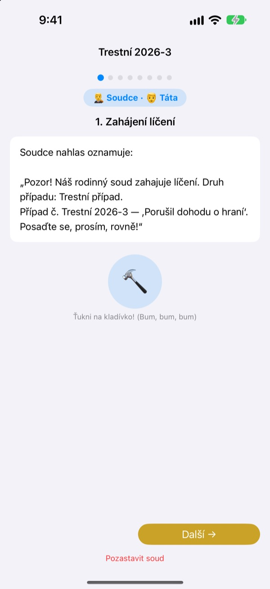
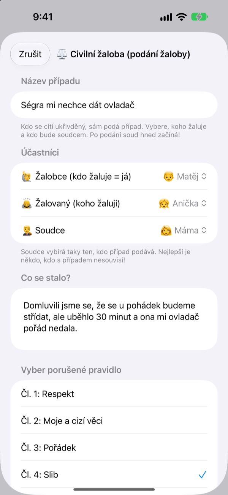
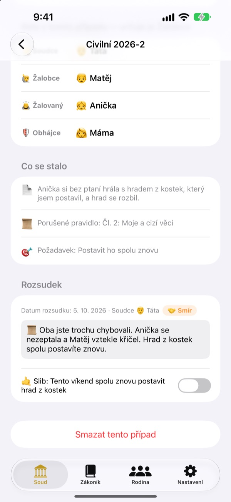
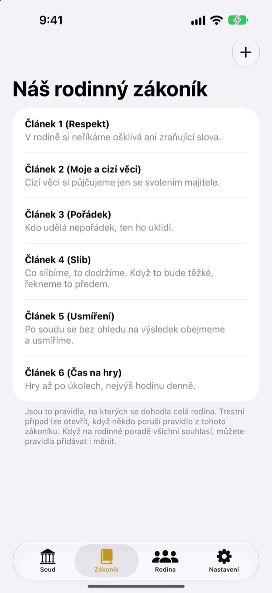

Je to nespravedlivé?
Žádné slzy, jde se k soudu.
Dítě samo podá žalobu jako žalobce a rodina si rozdělí role soudce a obhájce. Scénář v každém kroku napoví, kdo je na řadě a co říct, takže i první líčení běží jako skutečné.
Bez reklam, nákupů a registrace. Vše zůstává v tomto zařízení.

Uspořádejte líčení
Krátký případ: „Brácha mi nechce dát ovladač.“ Nahoře přepněte obtížnost slov, bouchněte kladívkem a spusťte časovač. Ozve se zvuk, zkontrolujte hlasitost.
„On začal!“ Už vás nebaví pořád dělat rozhodčího?
Když se strhne hádka, rozhodne nakonec skoro vždycky dospělý. Kdo prohraje, pláče, protože mu to přijde nespravedlivé, a kdo vyhraje, pořádně neví proč. Rodinný soud dává dětem pořadí: vyprávět celou svou stranu a druhou vyslechnout až do konce. A rozsudek končí slibem, ne jen trestem.
Kdo se cítí ukřivděný, žaluje sám
Kdo si myslí, že je něco nespravedlivé, stane se žalobcem a podá žalobu. Na koho a kdo bude soudcem, rozhoduje ten, kdo žaluje. Děti můžou zažalovat i mámu s tátou.
Viděli jste někoho porušit domácí pravidlo? Staňte se státním zástupcem a podejte trestní případ. Soudcem může být jen ten, kdo není žalobce ani žalovaný.

Rozsudek končí slibem
Spolu s rozsudkem se určí slib nebo trest a odškrtne se, až bude splněn. Uzavřené případy se stávají vašimi precedenty.
Nápady na trest začínají napravením škody a usmířením, víc náprava než trestání. Omezit hry nebo televizi přichází na řadu až nakonec.

Váš dům, vaše zákony
Zapište jako paragrafy pravidla, na kterých se rodina shodla, třeba respekt, uklízení a dodržování slibů, a kdykoli je doplňte nebo upravte. V žalobě se vybírá porušený zákon.
„Poznejte soud“ vysvětluje, co dělají soudce, žalobce, státní zástupce a obhájce a jak probíhá líčení.

Začnete ve třech krocích
- 1
Přidejte rodinu
Stačí jméno a emoji. Žádný účet.
- 2
Podejte případ
Nespravedlnost je civilní věc, porušené domácí pravidlo trestní. Pak vyberte soudce.
- 3
Zahajte líčení
Držte se scénáře, hlídejte čas časovačem a vyneste rozsudek kladívkem.
Slova, která rostou s dítětem
- Soudce
- Jednoduchá: Rozhodčí · Soudní: Předseda senátu
- Žalobce
- Jednoduchá: Ukřivděný · Soudní: Žalobce
- Žalovaný
- Jednoduchá: Odpovídající · Soudní: Žalovaný
- Státní zástupce
- Jednoduchá: Svědek · Soudní: Státní zástupce
- Obžalovaný
- Jednoduchá: Odpovídající · Soudní: Obžalovaný
- Obhájce
- Jednoduchá: Pomocník · Soudní: Obhájce
- Civilní případ
- Jednoduchá: Nespravedlnost · Soudní: Civilní případ
- Trestní případ
- Jednoduchá: Porušený slib · Soudní: Trestní případ
V Nastavení vyberte obtížnost slov a slova na obrazovce i ve scénáři se změní najednou. Pro předškoláky zkuste Jednoduchou, pro školáky Standardní.
Časté otázky
Od kolika let?
Každé dítě, které umí číst, si může hrát s rodičem. Se scénářem, nápovědou a obtížností Jednoduchá se zapojí i menší děti, když dospělý čte nahlas.
Je to opravdu zdarma?
Ano. Žádné reklamy ani nákupy, které by odemykaly funkce. V Nastavení je dobrovolné spropitné pro vývojáře, které nic neodemyká ani nezamyká.
Potřebuji internet?
Ne. Líčení i záznamy fungují úplně offline. Internet a přihlášení k iCloudu potřebujete jen k odeslání zpětné vazby z Nastavení.
Kde se ukládají záznamy?
Rodina, zákony, líčení a rozsudky se ukládají jen v zařízení a neposílají se na žádný server. K vývojáři se dostane jen zpětná vazba, kterou sami pošlete, a anonymní statistiky používání, podle kterých vás nikdo nepozná.
Můžu zálohovat nebo přejít na jiné zařízení?
„Uložit záznamy“ v Nastavení vše vyexportuje do souboru a „Načíst záznamy“ na druhém zařízení vše obnoví tak, jak to bylo. Načtou se i zálohy ze staré webové verze.
Funguje to na iPadu?
Ano, na iPhonu i iPadu. Velká obrazovka je ideální, když kolem sedí celá rodina.
Co když budou tresty moc přísné?
Když státní zástupce navrhuje trest, scénář připomene, že nemá být moc těžký a musí jít splnit. Nápady na trest začínají nápravou: napravit škodu, usmířit se, podívat se na věc očima druhého.
Jak všechno smažu?
Když aplikaci smažete, zmizí s ní všechny záznamy v zařízení. Nic z něj nikdy neodešlo, takže nikde jinde nic nezůstane. Chcete-li smazat odeslanou zpětnou vazbu, napište nám.
Chyby, nápady nebo cokoli jiného? Napište na leeo@kakao.com. Zpětnou vazbu můžete poslat i z nastavení aplikace.